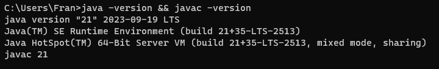

Instalación de Java en Windows - Tutorial
Bienvenido al tutorial de instalación de Java en Windows. A continuación, te guiaré a través de los pasos
para instalar Java y configurar las variables de entorno en tu sistema.
- Descarga de Java: Visita el sitio oficial de Oracle o AdoptOpenJDK para descargar
la última versión de Java para Windows.
- Instalación: Ejecuta el instalador descargado y sigue las instrucciones del
asistente de instalación.
- Configuración de variables de entorno: Abre el menú de inicio, busca "Variables de
entorno" y selecciona "Editar las variables de entorno del sistema".
- Variables de usuario: En la sección "Variables para Usuario", haz clic en "Nuevo" y
agrega las siguientes variables:
Variable: JAVA_HOME -
Valor: C:\Program Files\Java\jdk1.x.x (Reemplaza "1.x.x" con la
versión instalada).Variable: PATH - Valor: %JAVA_HOME%\bin.
- Verificación: Abre una nueva ventana de la línea de comandos y ejecuta
java -version y javac -version para verificar la instalación.
